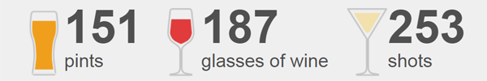

Ed is a data journalist on the BBC's Visual Journalism team, specialising in maps and Python. He used to be one of the BBC's online political reporters. Get in touch: @edlowther
Find a good nursery
A map of every nursery in England
Cycling calculator
How do you measure up against the Olympic champs?
EU referendum
The result in maps and charts
London mayor
Election results by neighbourhood
Life and death in Syria
Five years into war, what is left of the country?
London's languages
A study of linguistic communities living above the Victoria tube line
David Bowie
Every concert from every tour, mapped
Women in Parliament
Representation rises by a third at 2015 general election
Bank closures
More than 600 branches shut in a year
Booze calculator
What's your drinking nationality?
Booze calculator: What's your drinking nationality? 
MPs in two minds
The rise of guerilla abstentions in the Commons
Top dogs
Find the most popular type of dog in your area
E-petition campaigns
First day 'is crucial for success'
Plastic bag levy
Axe-men and goldfish enthusiasts among those to escape 5p charge
Privy Council quitters
The small band who are right honourable no more
Wine diplomacy uncorked
UK government's tasting notes reveal geopolitical strategies